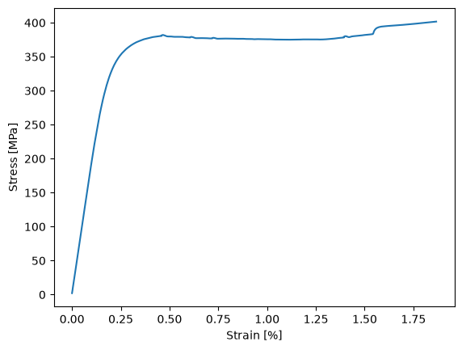
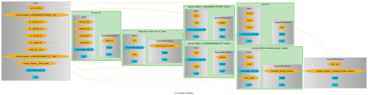
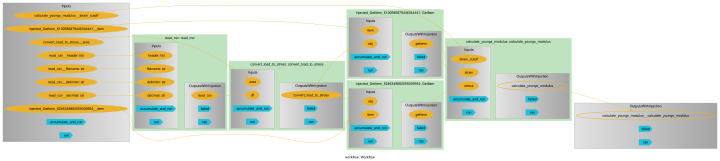

pyiron_workflow#
pyiron_workflow turns plain Python functions into the nodes of an explicit, inspectable workflow graph. Instead of relying on the order in which notebook cells happen to be executed, you declare how data flows between nodes, and pyiron_workflow figures out — and can cache — the rest. This notebook rebuilds the same workflow.py analysis from python.ipynb — read CSV → convert load to stress/strain → fit Young’s modulus → plot — as a graph.
from concurrent.futures import Future
from pyiron_workflow import Workflow, to_function_node
from workflow import (
read_csv as _read_csv,
calculate_youngs_modulus as _calculate_youngs_modulus,
convert_load_to_stress as _convert_load_to_stress,
plot as _plot,
)
Nodes#
to_function_node wraps an existing Python function — unchanged — into a pyiron_workflow node. Each of the function’s arguments becomes a node input, and its return value(s) become node output(s); nothing about read_csv, convert_load_to_stress, calculate_youngs_modulus or plot themselves had to change to make this work.
read_csv = to_function_node("read_csv", _read_csv, "read_csv")
calculate_youngs_modulus = to_function_node("calculate_youngs_modulus", _calculate_youngs_modulus, "calculate_youngs_modulus")
convert_load_to_stress = to_function_node("convert_load_to_stress", _convert_load_to_stress, "convert_load_to_stress")
plot = to_function_node("plot", _plot, "plot")
Workflow#
A Workflow is a container for nodes. Assigning wf.<name> = node(...) both adds the node to the graph and wires its inputs — either to a plain value or to another node’s output, e.g. wf.result_dict["stress"]. Execution is lazy: nothing actually runs until wf.run() is called, at which point pyiron_workflow resolves the dependencies and executes the nodes in the right order.
wf = Workflow("my_workflow")
wf.area = 120
wf.strain_cutoff = 0.2
wf.filename = "./data/dataset_1.csv"
wf.df = read_csv(filename=wf.filename)
wf.result_dict = convert_load_to_stress(df=wf.df, area=wf.area)
wf.youngs_modulus = calculate_youngs_modulus(stress=wf.result_dict["stress"], strain=wf.result_dict["strain"], strain_cutoff=wf.strain_cutoff)
wf.plot = plot(stress=wf.result_dict["stress"], strain=wf.result_dict["strain"], format="-")
wf.run()
{'youngs_modulus__calculate_youngs_modulus': np.float64(175.1800847629701),
'plot__plot': <Figure size 640x480 with 1 Axes>}

Workflow Graph#
wf.draw() renders the same graph visually. Because the graph structure and the Python code are two views of the same underlying object, this is what lets domain scientists and workflow developers collaborate on the same workflow — one thinking in code, the other in the diagram.
wf.draw(size=(10,10))

Python Workflow Definition#
The Python Workflow Definition is a minimal, engine-agnostic JSON schema for workflow graphs: nodes reference plain Python functions by their import path, and edges describe how outputs connect to inputs. write_workflow_json() exports the pyiron_workflow graph above into this format; load_workflow_json() reads it back into a fresh Workflow. Because the format only relies on plain functions and JSON, the exact same workflow.json can also be loaded by a completely different engine — see executorlib.ipynb.
References#
Janssen, J., George, J., Geiger, J., Bercx, M., Wang, X., Ertural, C., Schaarschmidt, J., Ganose, A. M., Pizzi, G., Hickel, T., & Neugebauer, J. (2025). A Python workflow definition for computational materials design. Digital Discovery. https://doi.org/10.1039/d5dd00231a
from python_workflow_definition.pyiron_workflow import write_workflow_json
wf = Workflow("my_workflow")
wf.area = 120
wf.strain_cutoff = 0.2
wf.filename = "./data/dataset_1.csv"
wf.df = read_csv(filename=wf.filename)
wf.result_dict = convert_load_to_stress(df=wf.df, area=wf.area)
wf.youngs_modulus = calculate_youngs_modulus(stress=wf.result_dict["stress"], strain=wf.result_dict["strain"], strain_cutoff=wf.strain_cutoff)
write_workflow_json(graph_as_dict=wf.graph_as_dict, file_name="workflow.json")
!cat workflow.json
{
"version": "0.1.0",
"nodes": [
{
"id": 0,
"type": "function",
"value": "workflow.read_csv"
},
{
"id": 1,
"type": "function",
"value": "workflow.convert_load_to_stress"
},
{
"id": 2,
"type": "function",
"value": "workflow.calculate_youngs_modulus"
},
{
"id": 3,
"type": "input",
"name": "filename",
"value": "./data/dataset_1.csv"
},
{
"id": 4,
"type": "input",
"name": "header",
"value": [
0,
1
]
},
{
"id": 5,
"type": "input",
"name": "decimal",
"value": ","
},
{
"id": 6,
"type": "input",
"name": "delimiter",
"value": ";"
},
{
"id": 7,
"type": "input",
"name": "area",
"value": 120
},
{
"id": 8,
"type": "input",
"name": "strain_cutoff",
"value": 0.2
},
{
"id": 9,
"type": "output",
"name": "result"
}
],
"edges": [
{
"target": 2,
"targetPort": "strain",
"source": 1,
"sourcePort": "strain"
},
{
"target": 2,
"targetPort": "stress",
"source": 1,
"sourcePort": "stress"
},
{
"target": 1,
"targetPort": "df",
"source": 0,
"sourcePort": null
},
{
"target": 0,
"targetPort": "filename",
"source": 3,
"sourcePort": null
},
{
"target": 0,
"targetPort": "header",
"source": 4,
"sourcePort": null
},
{
"target": 0,
"targetPort": "decimal",
"source": 5,
"sourcePort": null
},
{
"target": 0,
"targetPort": "delimiter",
"source": 6,
"sourcePort": null
},
{
"target": 1,
"targetPort": "area",
"source": 7,
"sourcePort": null
},
{
"target": 2,
"targetPort": "strain_cutoff",
"source": 8,
"sourcePort": null
},
{
"target": 9,
"targetPort": null,
"source": 2,
"sourcePort": null
}
]
}
from python_workflow_definition.pyiron_workflow import load_workflow_json
wf = load_workflow_json(file_name="workflow.json")
wf.draw(size=(10,10))

wf.run()
{'calculate_youngs_modulus__calculate_youngs_modulus': np.float64(175.1800847629701)}
Next steps#
Continue with executorlib.ipynb to execute this same workflow — including the workflow.json exported above — with a lightweight, HPC-ready executor instead of a graph engine, or see pyironflow.ipynb to build and run this same wf graph through a graphical, drag-and-drop interface instead of code.